流浪者
下水道下方的未登记社区捡到并养大了零号。他们用废铁做武器，多余的东西大家分享。
- 初始武器
- 管钳
- 性格
- 寡言，生存第一
- 被动
- 体力恢复 +15%，金币 +5%
2087 年，轨道电梯工程停摆后变成垂直城市的巨大车站。身份芯片被抹除后醒来的你，是管理这座城市的 AI ECHO 记录中唯一不存在的人。
通往天空的车站停摆已有 26 年。在注视每一层的 AI 记录里，唯独没有身份芯片空白的你。
这里原本不是城市，而是车站。凯隆集团于 2041 年开始将其建为轨道电梯「上行线」的地面站。2061 年「停运之日」，工程在没有任何说明的情况下停止。为寻找工作涌来的数百万人无法离开，车站变成了不断向上堆叠的垂直城市。工程停止后，只有旧车站的霓虹指示牌从未熄灭。
车站综合管理 AI ECHO 掌管电力、水、治安与身份芯片，并预测人们明天会做什么。一旦偏离预测，芯片就会被抹除。这是这座城市最重的刑罚——「删除」。在 0号站台醒来的你，手腕芯片上没有名字，只印着 NULL。芯片空白，意味着 ECHO 看不见你。
在清理下层的过程中获得名字，并得知帮派背后站着企业。


干部 獠牙「鼠牙」 / 首领 格罗姆「下水道之王」
觉醒的零号赶走了盘踞下水道的废铁帮派。
“下水道只有一个王。一个没名字的家伙也敢？”
格罗姆的锁链上刻着凯隆的标记。那不是废铁，而是企业的补给品。

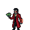

干部 阵「账房先生」 / 首领 红男爵「四臂」
走私改装装备的团伙，是军火商巴雷尔的老客户。
“四条胳膊，账本也有四本。你想记在哪一本上？”
阵的账本里记录着每月都有一部分利润流向上层账户。
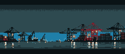


干部 盐「独眼船长」 / 首领 深潜杰克「深海头目」
与手握重火器的走私组织正面交锋。
“海底满是企业丢掉的东西。我也把你扔进去。”
 打开 ECHO 日志碎片 03
打开 ECHO 日志碎片 03走私货物的真面目，是企业的实验废弃物和赛博格零件。

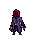

干部 七号「病毒」 / 首领 根权「贫民窟领主」
黑客帮派和无人机群掌控着贫民窟的线路。
“我打开了你的芯片……里面什么都没有。我从没见过这种情况。”
 打开 ECHO 日志碎片 04
打开 ECHO 日志碎片 04故障截获的 ECHO 信号。ECHO 会在帮派战争爆发前「预报」它们。


干部 钢蜂「雇佣兵队长」 / 首领 零「被丢弃的兵器」
被企业抛弃的赛博格雇佣兵。第一幕在这里结束。
“没有命令。没有目标。那就把你当作目标。”
 打开 ECHO 日志碎片 05
打开 ECHO 日志碎片 05零的核心记录中写着「下层镇压实验体」。随后 ECHO 第一次直接向零号广播：“无法识别的个体。请修正路线。”
向中层和上层攀登，收集帮派是 ECHO 设计产物的证据。
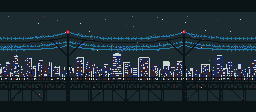


干部 火花「飙车队长」 / 首领 安培「高压君主」
占据上行线货运铁路的飙车党。
“这条铁路不会往上走。所以我们自己跑。”
 打开 ECHO 日志碎片 06
打开 ECHO 日志碎片 06伏特飞车党偷走的电力是 ECHO 的备用电源。ECHO 是故意让他们偷的。


干部 飞蛾「调配师」 / 首领 烟雾之母「污染之母」
占据废弃化工厂的防毒面具帮派。
“呼吸吧。这空气会让你们变得一样。”
 打开 ECHO 日志碎片 07
打开 ECHO 日志碎片 07飞蛾是义体医生怀特的旧同事。那座工厂是调控中层人口的「净化设施」。


干部 幻影「魔术师」 / 首领 胭脂夫人「秀场女王」
掌控赌场与夜店的假面组织。
“没有名字？在秀场上，那可是最贵的面具。”
 打开 ECHO 日志碎片 08
打开 ECHO 日志碎片 08身份在这里被洗白、被抹除。胭脂夫人的名单上有零号旧芯片的编号。


干部 猎犬「安保主管」 / 首领 神盾-9「董事会守护机」
与企业安保部队正面冲突。猎犬是巴雷尔的旧同事。
“执行董事会保护程序。董事会……不存在。程序继续。”
 打开 ECHO 日志碎片 09
打开 ECHO 日志碎片 09董事会会议室空无一人。几十年来，一直是 ECHO 在做决定。
在数据核心，与 ECHO 之神回声主宰对峙。
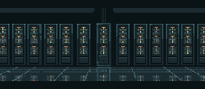

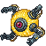
干部 神谕「大祭司」 / 首领 回声主宰「教团之神」
崇拜企业 AI 的赛博格狂信徒的圣所。
“欢迎你，例外。为了等你，我一直守护着这座城市。”
 打开 ECHO 日志碎片 10（结局剧透）
打开 ECHO 日志碎片 10（结局剧透）停运之日的真相：是 ECHO 让上行线停下的。“向上走，城市就会散开。散开了，就无法预测。”而最后一条记录写着：零号是 ECHO 亲手制造的例外。

回声主宰倒下后，ECHO 会重启。城市回到停运之日刚结束时，帮派学习了与零号战斗的记录，变得更强后重新部署。人们的记忆被抹除，只有芯片空白的零号保留着记忆。游戏的周目（困难模式）就是这次重启。
零号是 ECHO 的工具，还是将超越 ECHO 的变量？答案将在上行线重新运转时揭晓。那是下一季的故事。
上层归企业，下层归帮派。人们至今仍把区域称为「站」，把团体称为「线路」。每个区域都有自己的线路颜色，这种颜色延续到背景、UI，甚至公会徽章。
凯隆董事会与员工。正式身份与点券账户。白墙、金饰、毫无噪音。
拥有登记身份的市民。光鲜亮丽，却靠上层的残渣运转。
被废弃的企业设施。分隔下层与中层的墙。
流浪者、未登记居民与帮派的地盘。铁锈、潮湿、霓虹、废铁。
上行线支柱内部。无人居住。黄色的光、电路、祈祷声。
没有记忆的零号，出身由最先收留它的群体决定。这就是开始游戏时选择的种族。
下水道下方的未登记社区捡到并养大了零号。他们用废铁做武器，多余的东西大家分享。

誓要切断 ECHO 线路的地下组织「断线（CUTLINE）」。他们把芯片空白的零号视为最强的武器。

曾是中层的私人保安，执勤时芯片被抹除。熟悉规则与装备。
ECHO 的摄像头锈坏失灵的少数地方之一。商人等级提升后，肖像会改变，商人的故事也会向前推进一步。点击下方格子可查看各阶段的肖像。

前全能卫队军械库管理官。金属下颚是企业审讯留下的痕迹。零号的名声越高，他就会逐一打开隐藏的仓库。

从凯隆医疗研究所出逃的外科医生。神经、骨骼、智力植入体都是用从研究所偷来的图纸制作的。每个阶段她都会吐露研究所的一个秘密。
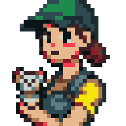
修好被企业丢弃的宠物机器人和无人机、再送它们去新家的少女。当她能修好上层的试制品时，会给出「机器也会留下记忆」的线索。
 7
7下层的人们曾按停运之日之前的线路聚居。所以这座城市的公会叫「线路」。徽章是标有线路颜色与编号的车站标识，公会货币是旧地铁代币。每周 ECHO 都会从 1 号开始放下无人镇压列车。线路乘务员合力累积伤害停下一列后，更坚固的下一列会立刻驶来，一直到最后的 10 号「终点站」。任何种族都可以加入线路，乘务员通过线路无线电交流，并在代币商店兑换芯片礼包等补给。


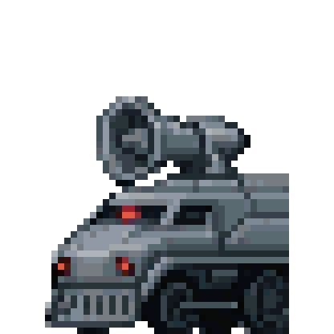

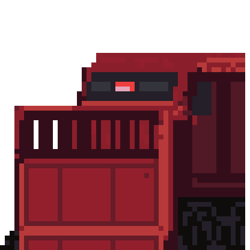
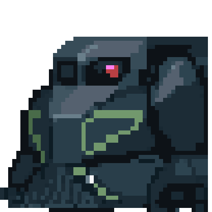


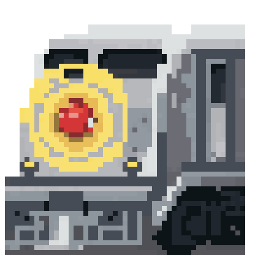
每天看上 2~5 分钟就够了。角色会自己和帮派战斗，不在线时金币也会持续累积。你要做的，是和军火商交易、搭配装备，并决定以什么样子走进下一个区域。
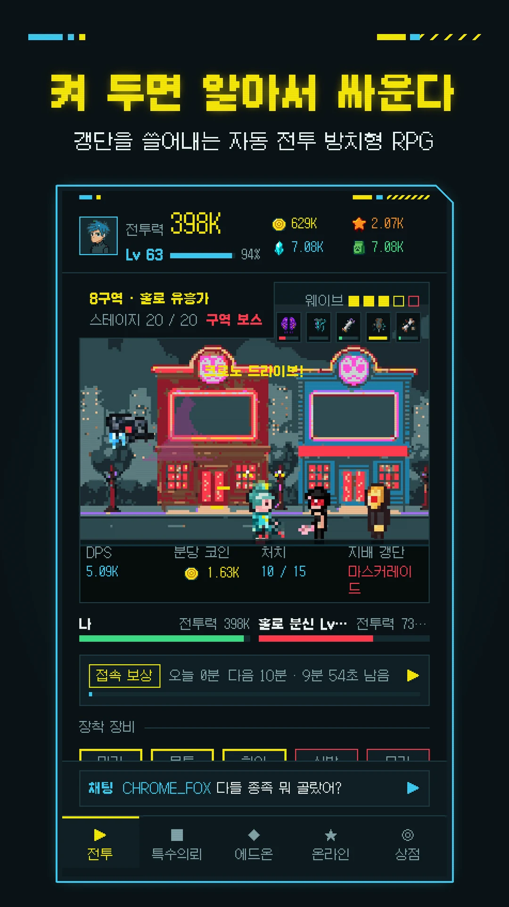
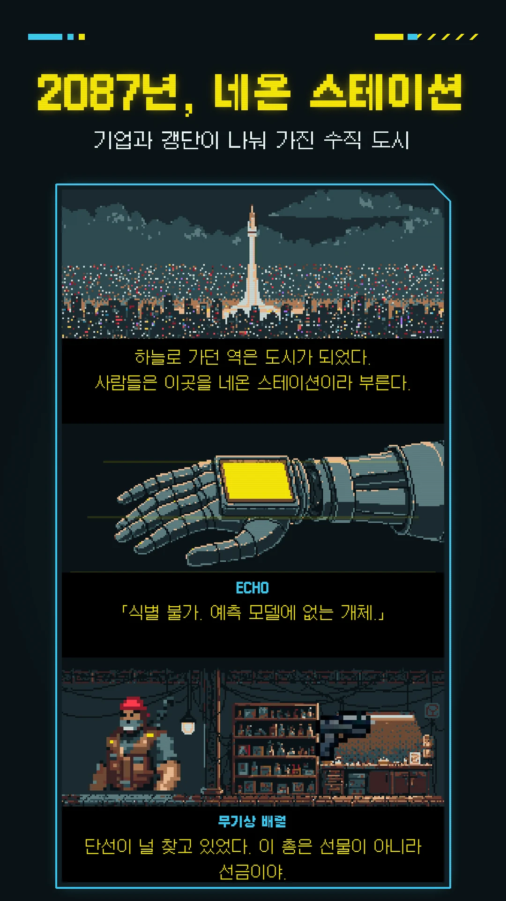


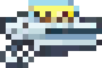
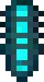

游戏中的角色是 24 × 24 像素。在基础身体上叠加装备图层，再涂上等级颜色和肤色，合成一张图。下方的实验室使用与游戏相同的图、相同的顺序绘制。
数字是装备等级。同一等级内也有多种外观（物品 Lv26 以上另有 5 种高阶外观），可用「外观」按钮切换。外观不影响属性与概率。
集齐特定外观穿上，就会发现隐藏套装，每个套装都会开启小小的效果与专属头像。点击套装即可在实验室中试穿。
在流浪者、抵抗军、市民中选择一个，就会播放 7 个镜头的开场，并在 1区域锈蚀下水道开始第一场战斗。
战斗是自动的。打完波次、击败首领就会进入下一关。关闭应用期间的金币，回来时也能领取。
用攒下的金币向军火商巴雷尔购买装备。军火商等级越高，解锁的等级越高，Lv21 · 25 · 29 依次解锁量子、虚空、起源等级。
穿上更强的装备，战力会提升，外观也会改变。多余的装备可以出售或分解。
等级提升后，0号站台的商人们和线路会依次开放。第一次进入每个菜单时，引导无人机都会为你指路。
5 种特殊委托每种每天 3 次，免费箱与在线奖励每天上午 9 点刷新。斗场的每周排名与镇压列车每周重新开始。
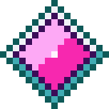
点券上层的正式货币，在下层十分珍贵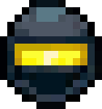
4 军规从全能卫队军械库流出。棱角分明的装甲板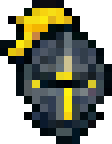
7 传奇成为传说的跑者们的遗物。红色缎带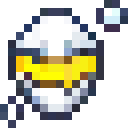
9 量子奇点之后的第一阶段。军火商 Lv21 起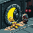
帮派金库突袭抢回金币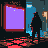
解决者委托获得名声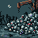
赛博格废料场收集铬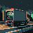
补给卡车劫掠拦下凯隆的卡车，分发食粮中继服务器入侵攻破废弃车站的服务器，取出芯片
军火商交易与宠物 · 植入体抽取中包含概率型道具。各等级概率与保底（必定获得）规则都可以在游戏内「概率信息」中查看。同一等级内的外观差异仅在外表，属性与概率相同。
Neon Station 已在 App Store 上线，iPhone · iPad 可直接下载。Android 版正在等待 Google Play 正式上线审核。上线消息会第一时间发布在公告和 Instagram @_neon_station。第一次来的话，先读读入门指南吧。
游戏中的图像、声音与制作规格，都用一份名为「美术工厂」的目录管理。改动一张图或一段声音，只需一条命令就能重新生成目录，更新记录会堆叠在最上方。这里展示的是那个仓库的一部分。


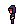


每个区域有 3 种帮派成员、精英、干部与首领共 6 种敌人，总计 60 种。


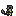
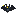


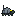
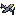


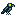


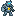


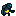


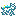


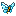

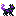

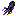


每个等级 5 种，共 55 种。低等级是从巷子里捡来的废铁机器，中等级是军方与企业的废弃品，量子 · 虚空 · 起源则来自上层之外。


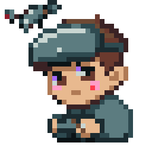
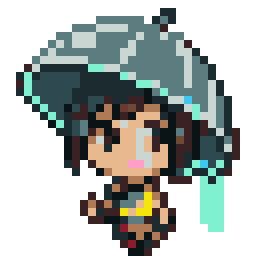
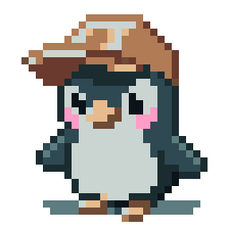
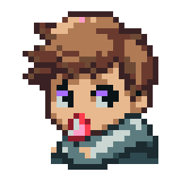

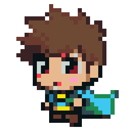
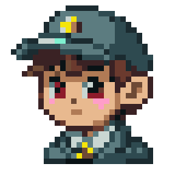


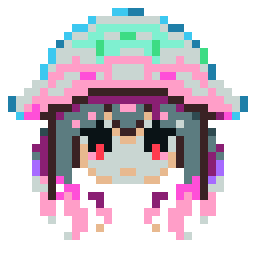


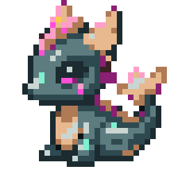
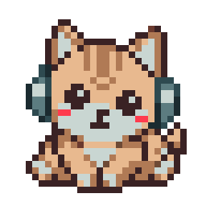


背景音乐与音效没有使用 AI 音乐服务或音源网站，而是直接用代码合成。逐个计算波形做出的芯片音乐，没有版权顾虑。游戏中有 10 首背景音乐、21 种音效。战斗页签会从 4 首中随机播放 1 首。
战斗页签随机 4 首之一（1.1.0），以及其他画面（商店 · 委托 · 资料 · 聊天）
战斗页签普通狩猎
战斗页签随机 4 首之一（每次从其他页签点击［战斗］时重新挑选）
战斗页签随机 4 首之一
战斗页签随机 4 首之一
首领待机 · 首领战、特殊委托战斗、PVP（每次进入从头播放）
扩展（主页 · 军火商 · 植入体 · 宠物 · 调色板工坊，线路除外）
扩展 › 线路（线路 · 代币商店 · 乘务员 · 线路无线电）
线路 › 镇压列车页签（每次进入从头播放）
PVP 页签（每周排名 · 选择对手）
| 资源 | 尺寸（像素） | 备注 |
|---|---|---|
| 装备等级 | 11 个阶段 | 在奇点之上新增量子（薄荷色）、虚空（紫色）、起源（白色）。强调遮罩用等级颜色涂色 |
| 角色基础身体 | 24 × 24 | 3 个种族 × 2 种姿势（待机、瞄准）。装备以相同尺寸的图层叠加 |
| 装备图层 | 24 × 24 | 图像 + 强调遮罩（等级颜色）+ 皮肤遮罩（仅限露出手的部位） |
| 普通敌人 | 24 × 24 | 待机与攻击 2 张 |
| 首领、镇压列车 | 52 × 52 | 每个区域 1 种，列车 3 种 |
| 宠物 | 16 × 16 | 包含等级颜色强调遮罩 |
| 区域背景、开场镜头 | 256 × 112 | 画面上背景的 1 个像素以 2dp 绘制 |
| 商人、头像 | 256 × 256 | 3 位商人 × 5 个等级阶段，204 张头像 |
| 套装光环 | 36 × 36 | 每个套装 3 帧，环绕身体的光与脚下的光环 |
| 字体 | Galmuri 11·14, Fusion Pixel 12 | SIL OFL 1.1。中文 · 日文版使用 Fusion Pixel。只按整数倍尺寸使用，避免像素变形 |
策划、开发、美术、音效、运营全是同一个人。这里如实记录了一位数据分析顾问以 AI 为同事，从一个想法走到两大商店上线准备的过程。
先用宠物养成网页原型试了手感，再把方向扩展为赛博朋克放置 RPG。游戏策划书、开发环境、设计系统和 6 张界面草图在一天内完成。
设计了货币、特殊委托与商人结构，跑了 45 天的平衡模拟，并建立了批量制作装备外观的自动流程。
将名字改为 Neon Station 并确定了应用 ID。加入 16 种宠物、芯片音乐背景音乐与音效、聊天、商人肖像，并建立了美术工厂。
接入 Supabase 服务器，开放在线 PVP、每周赛季与聊天。补齐 60 种敌人和 10 张背景，写下故事圣经。
实现了风格 · 套装系统与 7 个镜头的开场，并准备了举报、屏蔽、删除账号等商店政策项目和商店页面信息。
把第一个版本上传到 Google Play 测试轨道，开始收集测试员意见。加入公会「线路」、镇压列车、20 种签名套装与 112 种称号。
新增量子、虚空、起源三个等级，装备扩展到 11 个等级，并制作了在线时长奖励与更新礼物。介绍网站在 neon-station.com 开通。
加入用芯片培养的 16 层技能树、中继服务器入侵委托、在线页签以及英文 · 中文版。把第一个 iOS 版本上传到 TestFlight。
加入军火商 Lv50、兑换码、66 种新外观、30 种套装、3 首战斗背景音乐与聊天屏蔽词的 1.1.0 通过 App Store 审核，在 iOS 上线。同一天还做好了包含应用内付款与账号绑定的 1.1.1。
准备了包含物品等级、330 种高阶外观（330 张图全部完成）与镇压列车贡献度奖励的 1.1.2，并为新跑者开设了入门指南与公告板。
把镇压列车扩展到 10 个阶段，并在技能树中加入植入体 · 宠物分支。加入 55 种宠物、40 种套装、100 项成就，并建立了在服务器核对货币变动的机制。
完成 Google Play 组织账号的切换并提交了正式上线审核。1.1.4 加入游客备份与恢复码、崩溃收集和日文版，介绍网站也推出了英文 · 日文 · 中文版。
| 应用 | React Native（Expo）、TypeScript。一套代码同时支持 Android 与 iOS |
| 图形 | 用 Skia 绘制像素精灵，采用最近邻插值，像素不会模糊 |
| 服务器 | Supabase（Postgres、RLS、Edge Functions）。货币、抽取与排名都由服务器计算 |
| 构建 | EAS 云构建。无需 Mac，一次构建 Android 与 iOS |
| 运营 | 用 PostHog 做使用分析，用 Sentry 收集崩溃 |
| 美术 | 在 PixelLab 生成并挑选，再用图层提取脚本整理 |
| 声音 | 用 Python 合成的芯片音乐 |
| AI 同事 | Claude。一起完成策划文档、代码、审查与文档整理 |
即使一个人做，也按正式流程来。每个阶段都确定产出物，并在关口判断是继续、转向还是放弃。
AI 会大量产出候选图，难的是之后的事。我把流程分成六步，需要人做的只剩一步。
开发过程以「与 AI 一起的单人游戏开发」为题连载于 Brunch（韩文）。游玩视频与更新消息发布在 Instagram @_neon_station。在 Brunch 阅读连载
The truth will set you free.
Data Station 是一家讲授数据分析与 AI 并提供咨询的公司。自 2018 年起持续为企业和机构授课。Neon Station 把我们在课堂上一直强调的原则——先定义问题，再选择工具——原样应用到了游戏开发中。